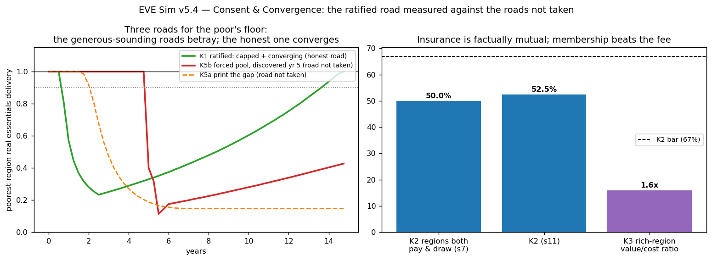

In plain language
Companion to RESULTS - v5.4 Consent & Convergence.md. The consent problem in one sentence: the world floor needs rich regions to chip in far more than any population has ever agreed to send strangers. July 6's decision was to cap the ask and let poor regions' floors grow toward equality instead of promising it on day one. This run measured that road — and the two roads not taken — in the same model world.
The setup
A 40-region toy world, tuned until it reproduces the original world-simulation's committed numbers (rich regions' net contribution peaking at 46% of their minting and falling to ~19% by year 15 as poorer joiners build their own earning power). Same world, five experiments.
The honest road (the one you chose)
Cap every region's mandatory contribution at the politically survivable level (6%), fund each floor locally first, top up the poorest from the capped pool, and let time-equal minting do the rest. Result: the poorest region's floor starts weak — about a third of full strength in the early years — and climbs steadily, crossing 90% at year 13.7 and reaching full parity by year 15. The promise "universal in guarantee, converging in strength" turns out to arrive inside the 15-year window it was registered against, with about a year to spare. Not lavish. Real.
And staying is worth it for the payers: at deliberately stingy estimates of what membership buys a rich region (cheaper welfare delivery, recovered tax gap, the builder economy, stability), the value comes out at 1.6× the capped fee, every region, every year. Consent doesn't have to be begged; it's arithmetic.
Road not taken #1 — print the difference
Promise equal floors everywhere on day one and mint whatever's missing. The model's money-printer starts at month 20, and the floor's real value drops below full strength one month later and never comes back — by year 15 the "equal" floor buys 15% of a grocery basket. Inflation ate the generosity, and it ate it fastest for the people holding the currency with no escape — the poor. The most generous-sounding promise delivered the least generous outcome in the entire experiment.
Road not taken #2 — force it and hide it
Keep the giant transfer but fog the glass so contributors can't see it. It works — delivery is a perfect 1.0 — right up until someone derives the number. At discovery (tested at years 3, 5, and 8), the paying regions walk, and because this road never admitted anyone could leave, it never built the parachute. The poorest regions' floors collapse to 8–17% of strength within six months and stay broken for 7 to 12 years. At the exact moment of betrayal, the honest capped road — the one that never promised day-one equality — is delivering three times more and still climbing. The chart of these two lines is the whole July 6 consent decision in one picture.
The test that failed — and why that's the good kind of failure
One bar was set on purpose to keep the marketing honest: the "mutual insurance" story ("you pay in because someday you might need to draw") is only legitimate if regions really do trade places. Measured over 60 years of shocks: only about half the regions ever experience both sides. Among the paying class it's true — three-quarters to five-sixths of payers also drew at least once, so for them the fire-pool framing is fact. But the persistently poorest half draws and, within a lifetime, essentially never pays.
So the design survives; the sales pitch gets a haircut. The pool is honestly two things wearing one name: real mutual insurance among the contributors, plus front-loaded, shrinking start-up help for joiners. Tell the insurance story to the people it's true for; call the other half what it is. A failed bar that improves the language instead of the mechanism — which is exactly what this vault's bars are for.
Usual honesty: a reduced-form world, calibrated to the committed originals, where the comparisons between roads are the finding and the absolute levels are not. Politics itself still isn't simulatable — these runs price the conditions consent needs, not the vote. Run and written by Claude Fable 5, July 7 2026, under bars registered before the code existed.
Figures

Technical results
Run: July 7, 2026. Spec: v5.4 SPEC - Consent & Convergence (registered) (bars K0–K5b fixed before any engine code). Engine: v54_consent_convergence_sim.py; artifacts: results_v54.json, fig_v54_consent.png. Seeds 7 + 11 on the stochastic cell. One registered bar failed (K2) and is reported as the run's most valuable finding. Two engine bugs were fixed pre-readout (a run-length encoder and the K5a clock measuring from t=0 instead of printing-start as the spec words it); no bar was moved.
Verdict table
| Cell | Bar | Result | Verdict |
|---|---|---|---|
| K0 validation | Reproduce committed v5.1 anchors: corrected net contribution peak 46.0 ± 1.5pp, yr-15 18.7 ± 1.5pp, obligations −60 ± 8% | 45.9% peak, 18.9% at yr 15, −61.5% (calibrated dials published: spread 8, β 0.42, κ 0.821, ramp 30 mo — frozen for all other cells) | PASS |
| K1 ratified design (capped + converging) | Poorest-region floor strength ≥ 0.90 by yr 15, within the 6% cap, zero printing | Sustained ≥ 0.90 from year 13.7; strength 1.00 at yr 15; zero printing | PASS — with ~15 months to spare. "Universal in guarantee, converging in strength" arrives inside its own registered window; the margin is real but not lavish, and the white paper should quote the year, not just the pass |
| K2 insurance legitimacy | ≥ 67% of regions both net-payer and net-drawer across 60 yr, both seeds | 50.0% / 52.5% — FAIL. Diagnostic: among payer regions, 74–84% also drew at least once | FAIL, informative — see below |
| K3 membership equilibrium | Value > capped contribution in ≥ 95% of rich region-years at conservative anchors | 100% of region-years; median ratio 1.6× | PASS — staying beats leaving on the ledger, at anchors chosen against the claim |
| K4 federation fallback | Zero printing, no collapse; publish the thin-solidarity number | Poorest local-only strength 0.10 at accession → 0.43 by yr 15; zero printing | PASS — survivable, and visibly thin: this number is what the capped tranche buys |
| K5a print the gap (counterfactual) | Expectation: real delivery < 1.0 within 12 months of printing start | Printing starts month 20 (post-accession ramp); delivery falls below 1.0 one month later; year-15 delivery 0.148 | CONFIRMED — the generous promise starves its beneficiaries; Road 2(c) stands, measured |
| K5b discovered forced pool (counterfactual) | Expectation: ≥ 24 consecutive months < 1.0 after discovery AND below the same-date K1 path | Discovery at yr 3/5/8 → 144 / 120 / 84 consecutive months below 1.0; delivery 6 months post-discovery 0.08 / 0.11 / 0.17 vs K1's same-date 0.29 / 0.37 / 0.54 — the humble road is 3× higher at the moment of betrayal and never cliffs | CONFIRMED — Road 2(b) stands, measured |
The K2 failure, stated the way the vault states failures
The registered bar demanded that the veil-of-ignorance framing be factually true for most regions: over 60 years of regional shocks, at least two-thirds should experience both sides of the insurance pool. Measured: only half do. The mechanism: post-convergence income levels compress, but income rankings barely change in this world — so above-median regions both pay and draw (74–84% of payers also drew — for the contributor class, the insurance framing is strongly factual), while the persistently-poorest half draws and essentially never pays within a human lifetime.
What this does to the ratified A.2 language: the tranche is honestly described as two instruments wearing one name — (1) genuine mutual shock-insurance among the contributor class (factual, measured), and (2) convergence support for joiners (front-loaded, self-liquidating, but not "insurance you might claim" on any electoral timescale for the payer who asks). The §4.2 reframe survives for audience (1); selling it as literally mutual for everyone would be the kind of overclaim this program retires. Recommended claim surgery: "mutual insurance among contributors, plus a capped, declining accession tranche — both inside the 6% cap." A mobility-including variant (regions changing rank, not just level) may be re-registered as exploratory; adding mobility now, to pass the bar, is what house rules exist to prevent.
What the run establishes overall
The ratified road works on its own registered terms (K1), is individually rational for the payers (K3, 1.6× at conservative anchors), and degrades gracefully (K4 — with the honest price tag: local-only leaves the poorest at 10% coverage on day one). Both roads not taken are now measured catastrophes for exactly the people they sound generous toward: printing melts the floor to 0.15 by year 15; the opaque forced pool delivers a decade of broken floor after discovery, from which the capped design — 3× higher delivery at the same date and rising — never has to recover, because it never lied. And the one bar that failed (K2) failed in the direction that makes the language humbler, not the design weaker: the cap, the reciprocity dashboard, and the membership ledger carry consent for the payers; the insurance story should be told only to the audience for whom it is true.
Honest limits
Reduced-form world (equal populations, one obligation slope, exponential convergence, static rankings — the K2 result is conditional on that last structure and says so); K3 anchors conservative but assumed; K5b's crash shape is a v6.7-anchored dial (v9 owns the microstructure); consent itself remains political, not simulatable. Within-world comparisons are the deliverable.
Run executed by Claude Fable 5, July 7 2026, under the July 7 registration. Plain-language companion: PLAIN LANGUAGE - v5.4 Consent & Convergence.md.
Raw data